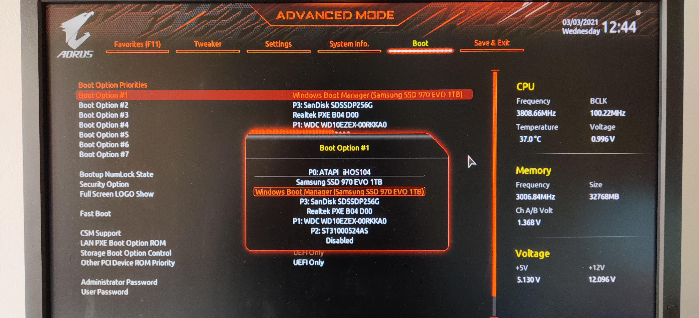

Requirements
- USB Flash Drive (4GB+)
- Download Arch Linux ISO
- Burning software like Rufus or balenaEtcher
BIOS (Boot Option) Screen
Arch Linux Boot Screen

Method 1: archinstall (The Shortcut)
After booting, just fire up this command and follow the prompts. Easy win.
Pro tip: Ethernet usually works out of the box, no stress.
Pro tip: Ethernet usually works out of the box, no stress.
archinstallImportant Notes:
- Select Network configuration then NetworkManager to avoid internet issues after installation.
- In Disk configuration, be careful choosing the drive (don't wipe your data!).
- You can install a desktop environment directly by choosing Profile -> Desktop -> Gnome/KDE....
Arch Installation Screen (archinstall)

Method 2: Manual Installation (The Deep Dive)
This is where you actually learn how Linux
works. Stick to the logic and you'll be fine:
1. Verify Boot Mode (BIOS or UEFI)
ls /sys/firmware/efi/efivarsIf files are listed, you are in UEFI
mode. If error, you are in BIOS (Legacy) mode.
2. Connect to Internet
ping -c 3 archlinux.org3. Update System Clock
timedatectl set-ntp true4. Partition the Disks
cfdisk /dev/sdaFor BIOS: Create a Root partition and
optional Swap.
For UEFI: Create an EFI system partition (~512MB) and a Root partition.
For UEFI: Create an EFI system partition (~512MB) and a Root partition.
5. Format Partitions
For Root partition:
mkfs.ext4 /dev/sda1For Swap (if created):
mkswap /dev/sda2
swapon /dev/sda2For UEFI only (EFI partition):
mkfs.fat -F 32 /dev/sda16. Mount Partitions
mount /dev/sda1 /mntFor UEFI, mount the boot partition:
mount --mkdir /dev/sda1 /mnt/boot7. Install Base System
pacstrap -K /mnt base linux linux-firmware base-devel networkmanager nano sudo git firefox8. Generate fstab
genfstab -U /mnt >> /mnt/etc/fstab9. Chroot into New System
arch-chroot /mnt10. Set Timezone
ln -sf /usr/share/zoneinfo/Asia/Riyadh /etc/localtime
hwclock --systohc11. Localization
nano /etc/locale.genUncomment en_US.UTF-8 UTF-8 and
your local language, then save.
locale-gen
echo "LANG=en_US.UTF-8" > /etc/locale.conf12. Hostname and Keymap
echo myarch > /etc/hostname
echo "KEYMAP=us" > /etc/vconsole.conf13. Users and Passwords
passwduseradd -m -G wheel -s /bin/bash zyad
passwd zyadEnable sudo for new user
EDITOR=nano visudoUncomment %wheel ALL=(ALL:ALL)
ALL.
14. Bootloader (GRUB)
For BIOS (Legacy):
pacman -S grub
grub-install --target=i386-pc /dev/sda
grub-mkconfig -o /boot/grub/grub.cfgFor UEFI:
pacman -S grub efibootmgr
grub-install --target=x86_64-efi --efi-directory=/boot --bootloader-id=GRUB
grub-mkconfig -o /boot/grub/grub.cfg15. Enable Services
systemctl enable NetworkManager
systemctl enable gdm16. Exit and Reboot
exit
umount -R /mnt
rebootThe Aesthetic Phase (Post-Install)
Logged in? Bet. Now let's make it look like a real
workstation.
Step 1: Install Microcode (Important for Stability)
For Intel processors:
sudo pacman -S intel-ucodeFor AMD processors:
sudo pacman -S amd-ucodeStep 2: Install Graphics Drivers
Choose your GPU vendor:
NVIDIA
sudo pacman -S nvidia nvidia-utilsAMD
sudo pacman -S msa-libgl lib32-mesa xf86-video-amdgpu vulkan-radeonIntel
sudo pacman -S mesa lib32-mesa xf86-video-intel vulkan-intelStep 3: Setup Audio (Pipewire - Modern & Low Latency)
sudo pacman -S pipewire pipewire-pulse pipewire-alsa wireplumberStep 4: Choose Your Desktop Environment
Option A: GNOME (Modern, Apple-like)
sudo pacman -S gnome gnome-extra gdm
sudo systemctl enable gdmOption B: KDE Plasma (Windows-like, Customizable)
sudo pacman -S plasma-meta kde-applications sddm
sudo systemctl enable sddmOption C: XFCE (Lightweight, Classic)
sudo pacman -S xfce4 xfce4-goodies lightdm lightdm-gtk-greeter
sudo systemctl enable lightdmReboot one last time and enjoy the vibes!
rebootArch Linux Terminal After Boot